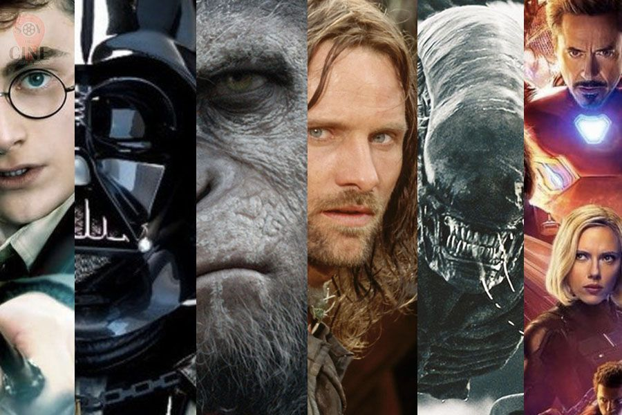

LAS 5 SAGAS Y FRANQUICIAS MÁS TAQUILLERAS DE LA HISTORIA
El cine ha dado personajes inolvidables para el público de la talla de Superman, Iron Man, Neo, Indiana Jones, Shrek, Darth Vader, Gandalf, Harry Potter... y así continúa la interminable lista. Todos ellos han formado parte, de una forma u otra, de una gran saga o franquicia. Pero, ¿cuál de ellas es la más taquillera de todos los tiempos? Descúbrelo a continuación.
- Universo cinematográfico de Marvel — $14.274.938.342 — 18 *
- Star Wars —$8,846,498,666 — 10 *
- Mundo mágico de J.K. Rowling — $8,539,253,704 — 9
- James Bond — $7,040,275,645 — 26
- La tierra media de J.R.R. Tolkien — $5,884,488,087 — 7